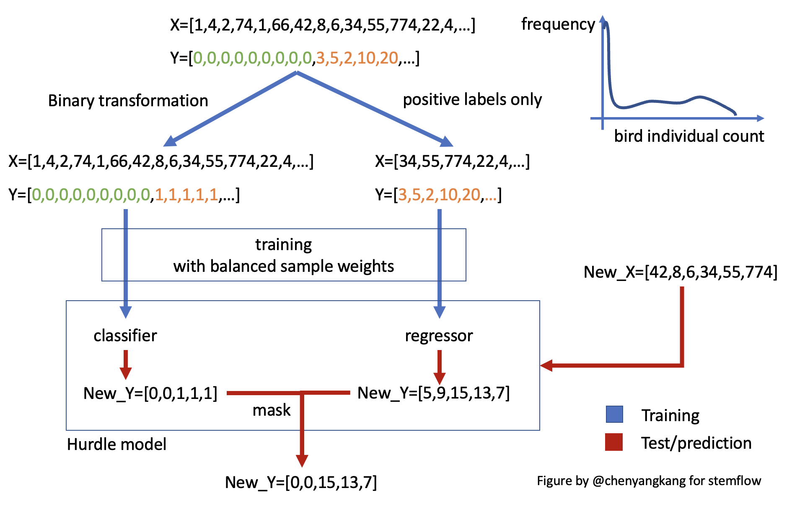

Tips for different tasks
stemflow supports different types of tabular data modeling tasks, including
- Binary classification
- Regression
- Hurdle regression (first classify then regress on the positive part) for zero-inflated data
Classification and regression
To create a classification or regression model, you can simply use the corresponding model classes.
Binary classification
Create a model
For binary classification, you can pass a sklearn BaseEstimator style classifier (in this case XGBClassifier) to the AdaSTEM classifier wrapper (AdaSTEMClassifier):
from stemflow.model.AdaSTEM import AdaSTEM, AdaSTEMClassifier
from xgboost import XGBClassifier
model = AdaSTEMClassifier(
base_model=XGBClassifier(tree_method='hist',random_state=42, verbosity = 0,n_jobs=1),
save_gridding_plot = True,
ensemble_fold=10,
min_ensemble_required=7,
grid_len_upper_threshold=1e5,
grid_len_lower_threshold=1e3,
temporal_start=1,
temporal_end=366,
temporal_step=20,
temporal_bin_interval=50,
points_lower_threshold=50,
Spatio1='proj_lng',
Spatio2='proj_lat',
Temporal1='DOY',
use_temporal_to_train=True,
n_jobs=1
)
stemflow automatically calculates binary class weights (using sklearn.utils.class_weight.compute_class_weight with class_weight set as 'balanced') in each stixels for imbalanced data and pass them to base model during training.
Prediction
## fit
model = model.fit(X_train.reset_index(drop=True), y_train)
## predict
pred = model.predict(X_test)
Alternatively, you can predict the probability:
Or return the prediction variation across the ensembles:
## also return the prediction std
pred_proba_mean, pred_proba_std = model.predict_proba(X_test, return_std=True)
Evaluation
Correspondingly, you would use a set of metrics for the classification problem:
This will return a bunch of metrics, including AUC, precision, recall, etc.Regression
For Regression problem, you can pass a sklearn BaseEstimator style regressor (in this case XGBRegressor) to the AdaSTEM regressor wrapper (AdaSTEMRegressor):
from stemflow.model.AdaSTEM import AdaSTEM, AdaSTEMRegressor
from xgboost import XGBRegressor
model = AdaSTEMRegressor(
base_model=XGBRegressor(tree_method='hist',random_state=42, verbosity = 0,n_jobs=1),
save_gridding_plot = True,
ensemble_fold=10,
min_ensemble_required=7,
grid_len_upper_threshold=1e5,
grid_len_lower_threshold=1e3,
temporal_start=1,
temporal_end=366,
temporal_step=20,
temporal_bin_interval=50,
points_lower_threshold=50,
Spatio1='proj_lng',
Spatio2='proj_lat',
Temporal1='DOY',
use_temporal_to_train=True,
n_jobs=1
)
## fit
model = model.fit(X_train.reset_index(drop=True), y_train)
## predict
pred = model.predict(X_test)
pred = np.where(pred<0, 0, pred)
# Evaluation
eval_metrics = AdaSTEM.eval_STEM_res('regression',y_test, pred_mean)
Likewise, you could also return the variation of prediction by setting return_std=True in method predict. predict_proba is not available for regression.
Hurdle
Hurdle model is different from regression or classification model – it combines them.
Hurdle model is designed to solve the zero-inflation problems, which is commonly seen in count data, for example, the count of individual birds for a species in each checklists. Too many "zeros" in target data will bias the loss function and induce imbalanced likelihood, weaken the model performance. Similar methods to solve zero-inflation problems include Zero-Inflated Poisson Model (ZIP), Zero-Inflated Negative Binomial Model (ZINB).
Hurdle model workflow
Hurdle model, as its name indicates, uses two-step modeling method to solve the zero-inflation problems:

As shown in this figure, zero-inflated input data was first used to train a classifier, with labels being binary transformed. Then, the samples with positive labels are used to train a regressor. Together these two compose a hurdle model. When new data comes in, classifier and regressor make prediction independently, and the results are combined/masked to yield the final prediction (only those samples classified as positive will be assigned continuous prediction from the regressor).
Hurdle model common practice
Combined with AdaSTEM framework, hurdle model is usually used as a based model:
model = AdaSTEMRegressor(
base_model=Hurdle(
classifier=XGBClassifier(...),
regressor=XGBRegressor(...)
),
...
)
This is a common practice in most paper I've seen, including reference [1-3].
However, AdaSTEM model could also be used as regressor or classifier if needed:
model_Ada_in_Hurdle = Hurdle_for_AdaSTEM(
classifier=AdaSTEMClassifier(
base_model=XGBClassifier(...),
...),
regressor=AdaSTEMRegressor(
base_model=XGBRegressor(...),
...)
)
The later one is more a conservative framework and have higher precision score, but lower recall and overall performance. For more details see "Hurdle in AdaSTEM or AdaSTEM in hurdle?"
References: